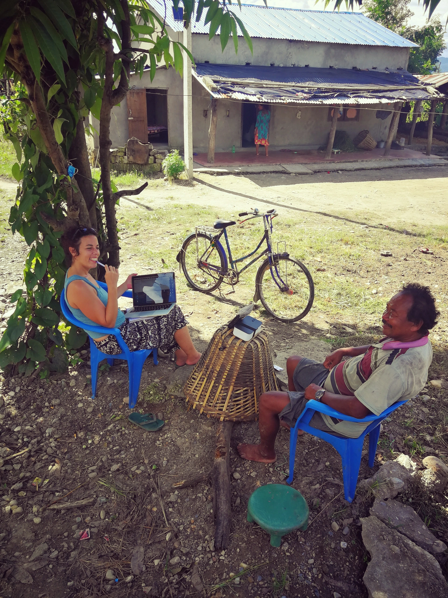

Hello, and welcome!
I am a linguist who conducts research and documentation projects on Trans-Himalayan languages (also known as Tibeto-Burman or Sino-Tibetan). My work focuses on phonology, morphology, historical linguistics, linguistic typology, and language documentation.
I am currently a lecturer-researcher in linguistics at Université Bordeaux Montaigne (UBM) and an associate member of the research laboratory IKER of the French National Center for Scientific Research (CNRS).
For over a decade, I have been working in close collaboration with speakers of four Himalayan languages spoken in western and central Nepal, including Magar, Khamci, Bhoto, and Chepang.
My approach to the study of language is functional, usage-based, constructional, and comparative. I rely heavily on primary data collected in the field to document language in use, rather than in isolation. This approach contributes to a more ecologically valid understanding of linguistic structures, their typological specificities, and evolutionary dynamics. My research also draws on the history and anthropology of the Himalayan region.
The research and documentation projects I have carried out received funding from grants awarded by the JSPS, the NSF, the ELF, and the University of Oregon.
My Ph.D. dissertation, titled The Chepang language: Phonology, nominal and verbal morphology, won the 2023 Panini Award from the Association for Linguistic Typology.
Nepal has become my second home and I am deeply grateful to all the people I met and shared their time, knowledge, and wisdom with me.